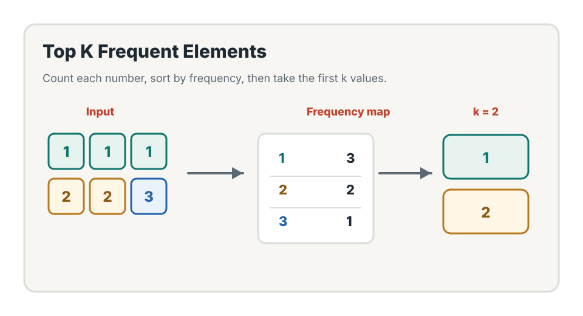
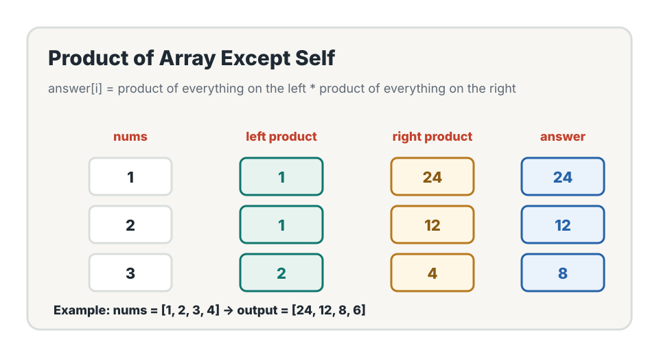
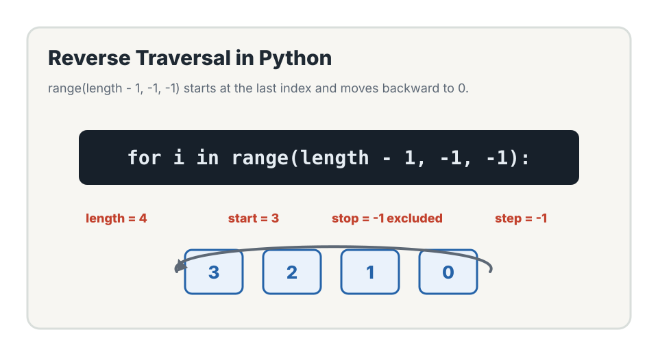

Frequency Ranking Visual

Amazon Web Services SDE Prep
Today's goal is to combine HashMap frequency counting with ranking, then learn prefix and suffix products to avoid recomputing work for every index.
Concepts
Day 3 has two big ideas: count values and rank them by frequency, then carry reusable information from the left and from the right.


Day 2 counted characters. Day 3 counts numbers, then uses those counts to rank items. It also introduces prefix and suffix products, which help avoid nested loops.
Count first, then rank. For prefix/suffix problems, do not recompute the same information for each index. Carry information from the left, then carry information from the right.
LeetCode 1
Given an integer array and an integer k, return the
k most frequent elements.
def top_k_frequent(nums, k):
count = {}
for num in nums:
count[num] = count.get(num, 0) + 1
items = list(count.items())
items.sort(key=lambda pair: pair[1], reverse=True)
result = []
for i in range(k):
result.append(items[i][0])
return result
n is the total number of elements, and m
is the number of unique elements. Counting costs O(n).
Sorting unique elements by frequency costs O(m log m).
LeetCode 2
For each index, return the product of every number except the number at that index, without using division.
def product_except_self(nums):
length = len(nums)
result = [1] * length
prefix = 1
for i in range(length):
result[i] = prefix
prefix *= nums[i]
suffix = 1
for i in range(length - 1, -1, -1):
result[i] *= suffix
suffix *= nums[i]
return result
The answer at index i is the product of everything to
the left of i multiplied by the product of everything
to the right of i.
answer[i] = left_product[i] * right_product[i]"I store prefix products in the output array during the first pass, then scan from right to left and multiply each position by the suffix product. This gives O(n) time without using division."
Python Pattern
The suffix pass uses Python's reverse range pattern to iterate from the last valid index down to index 0.

for i in range(length - 1, -1, -1):
Start at the last index, move backward by 1, and stop after index 0.
The stop value is -1 because Python's
range excludes the stop value.
Must-Memorize Q&A
These answers are designed for interview practice. Keep them short, clear, and tied to complexity.
Build a frequency map from number to count, sort the unique
numbers by frequency in descending order, and return the first
k numbers.
m mean in O(n + m log m)?
m is the number of unique elements. We scan all
n values, then sort only the unique values.
A prefix product at index i is the product of all
values before index i.
A suffix product at index i is the product of all
values after index i.
A nested loop recomputes products for every index and costs
O(n^2). Prefix and suffix products reuse information
and reduce the time to O(n).
range(length - 1, -1, -1)?
It starts at the last valid index, moves backward by 1 each time,
and includes index 0 because the stop value -1 is
excluded.
If the output array does not count as extra space, the algorithm
only uses two variables, prefix and
suffix.
Avoid repeated work. Count once when ranking frequency, and carry prefix/suffix information instead of recomputing products.
Review
If you can explain each item below, Day 3 is complete. Your checked items are saved in this browser.
Count first when you need rankings, and carry prefix/suffix values when each index needs information from both sides.